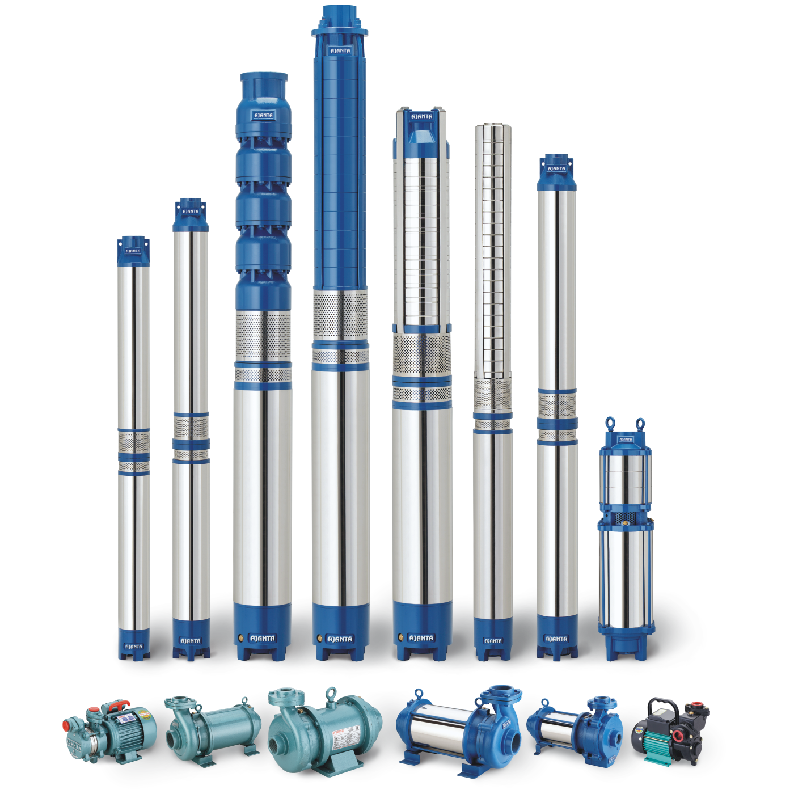

Residential Submersible Pump
About our company
We provide professional solutions to choose a suitable pump
such as domestic, agriculture, water supply to
townships, Industries, sewage and drainage.
12
12k+

We Believe Every Client Is a
Valuable Long-Term Partner